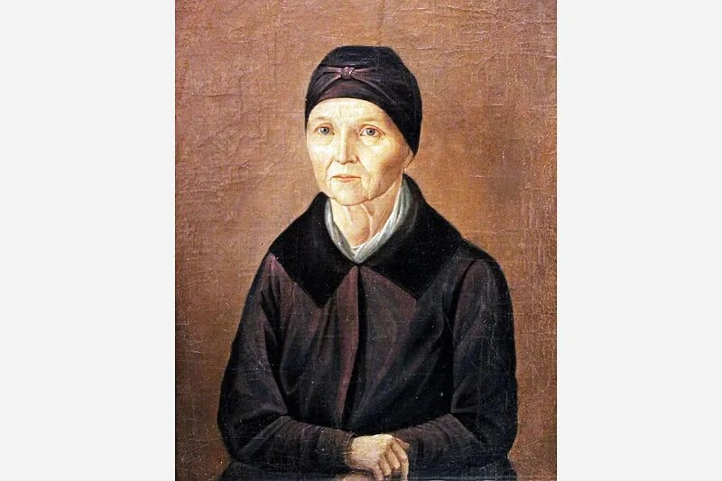

Биография
Читать биографиюАрина Родионовна Яковлева родилась 21 апреля 1758 года в семье крепостных крестьян. Она стала известна как няня великого русского поэта Александра Сергеевича Пушкина.
Полное имя няни — Арина Родионовна Яковлева. Она служила в семье Ганнибалов, родственников Пушкина по материнской линии. Позже она стала няней Александра Пушкина и его сестры Ольги.
В детстве Пушкин часто проводил время с Ариной Родионовной. Она рассказывала ему народные сказки, песни, предания и поверья. Благодаря ей будущий поэт с ранних лет полюбил русский народный язык и фольклор.
Особенно близкими их отношения стали во время ссылки Пушкина в село Михайловское в 1824–1826 годах. Поэт жил вдали от друзей и столицы, а Арина Родионовна поддерживала его, заботилась о нём и рассказывала сказки долгими вечерами.
Многие исследователи считают, что рассказы Арины Родионовны вдохновили Пушкина на создание известных сказок: «Сказки о царе Салтане», «Сказки о рыбаке и рыбке», «Сказки о мёртвой царевне и о семи богатырях».
Пушкин очень тепло относился к своей няне. В стихотворении «Няне» он назвал её «подругой дней моих суровых». Эти слова показывают, насколько важным человеком она была в его жизни.
Арина Родионовна умерла в 1828 году. Пушкин тяжело переживал её смерть и всегда вспоминал о ней с большой любовью и уважением.
Интересные факты
- Арина Родионовна была няней не только Пушкина, но и его сестры Ольги.
- Она знала множество народных сказок, песен и преданий.
- Во время ссылки в Михайловском она жила рядом с Пушкиным.
- Пушкин посвятил ей стихотворение «Няне».
- Её образ стал символом доброй русской няни в литературе и культуре.
Связь с творчеством Пушкина
- Стихотворение «Няне»
- Сказка о царе Салтане
- Сказка о рыбаке и рыбке
- Сказка о мёртвой царевне и о семи богатырях
- Поэма «Руслан и Людмила»
Арина Родионовна сыграла важную роль в формировании личности Пушкина. Она помогла ему почувствовать красоту русского языка, народной речи и старинных сказаний.
Стихотворение Пушкина «Няне»
«Подруга дней моих суровых,
Голубка дряхлая моя!
Одна в глуши лесов сосновых
Давно, давно ты ждёшь меня».
Основные даты жизни
Рождение Арины Родионовны
Рождение Александра Пушкина
Арина Родионовна становится няней Пушкина
Жизнь рядом с Пушкиным в Михайловском
Смерть Арины Родионовны
Влияние на культуру
Арина Родионовна стала важным образом русской культуры. Её считают символом народной мудрости, доброты и любви к детям.
Благодаря её сказкам и песням Пушкин познакомился с богатством русского фольклора, который позже использовал в своих произведениях.